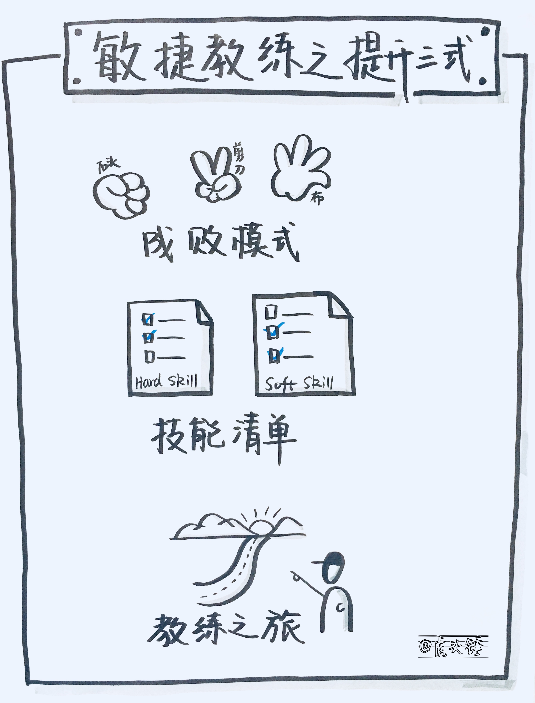
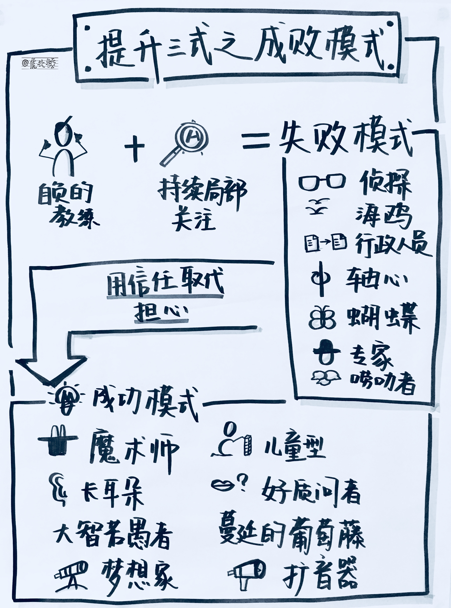
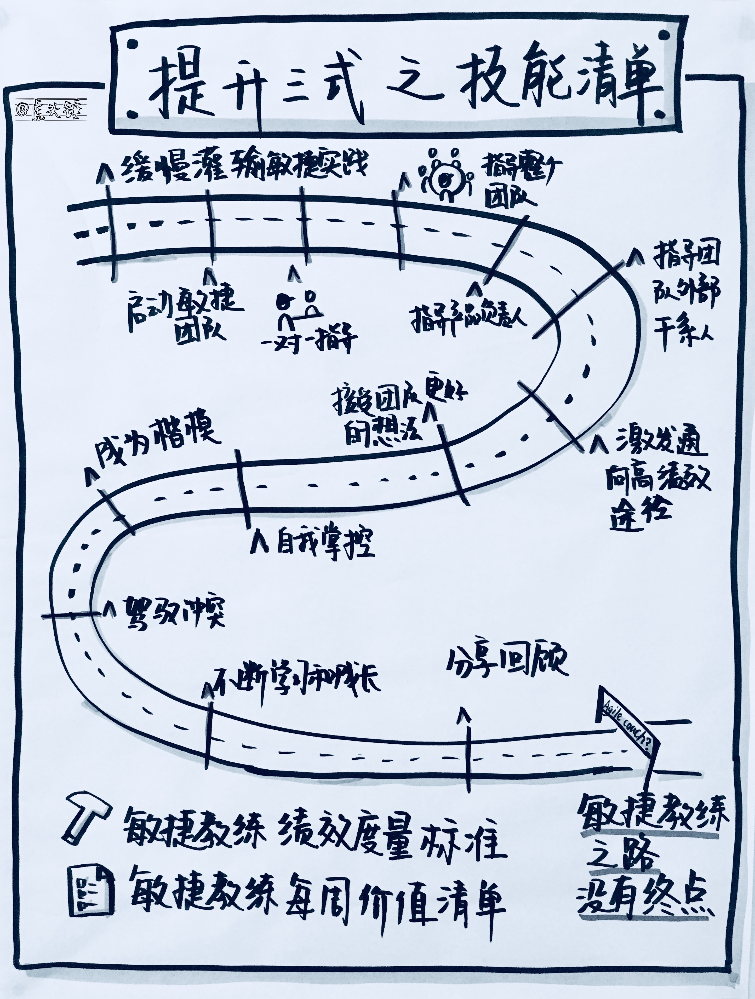
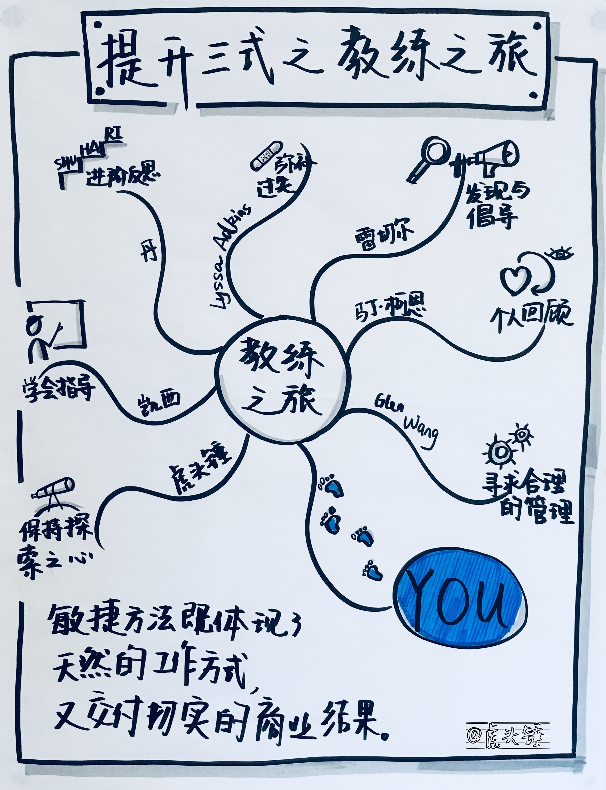

在经历了四种心法和六脉神剑的修炼之后，敏捷教练的路还要往前走。本文介绍敏捷教练的提升三式：
- 成败模式
- 技能清单
- 教练之旅

提升第一式：成败模式
本节介绍敏捷教练失败的种种陷阱，和成功的许多要素。注意在教练过程中的错误模式，并有意识地选择不掉进它的陷阱里。越少掉进失败模式的陷阱，你就越有时间注意到你在指导过程中出现的好的事情，即成功模式。

敏捷教练的失败模式
- 侦探。花不多不少的时间观察团队，然后便生成并带着下次回顾会议的话题，消失在黑暗中。
- 海鸥。猛然扎进站会中，用善意的观察和建议冲击整个团队，然后便飞走。
- 武断者。经常表达各种观点，固执己见，不惜放弃指导团队进行有意义的讨论所需要的客观性。
- 行政人员。通过充当不必要的会议后勤、访问权限申请和其他行政事务的中间人来削弱团队的自主权。
- 轴心。充当团队成员间所有交流的中心，并进行任务层面的协调。
- 蝴蝶。在一个个团队周围掠过，停留的时间仅够传授一滴慧珠或提出一个富于哲理的问题。
- 专家。深入地进入团队工作的细节中，以致因为树太多而不见森林。
- 唠叨者。好心地提醒团队开始站立会议、更新状态墙、按时完成承诺的任务等。
失败模式的来源
- 失败模式起源于教练的自负或持续的局部关注。
- 当以我为主的想法无节制地蔓延时，就会很容易地转化为以我为中心的状况。
- 以我为中心，就不能给团队留出足够的空间来领会可能发生的变化、提出新的观点，让他们意识到能够真正做到多好。
- 当敏捷教练指导多个团队或因为其他情况分散精力时，通常就会出现持续局部关注的现象。
从失败模式中恢复
- 方法很简单：用信任取代担心。
- 要对团队成员寄予信任，相信他们真正知道去做正确的事情。如果他们失败了，也会从中吸取教训并变得更强大。
- 敏捷方法的框架中有各种内置的机制来帮助你拥有信任感，因为他们鼓励和容许犯错误。固定时长的短迭代确保大家不会失利得太远或者造成影响深远的后果。
- 关注团队中真正发生的事情和试图发生的事情。
- 信任加关注就是好的教练方法的基础。
- 培养觉知。让头脑中的噪音沉寂，以便能够思考，和可以进行清楚的观察。为自己的头脑腾出一些空间，有意识地对自己进行调整，以了解团队所需的东西而不是自己内心发生的东西。
- 保持好奇。对团队正在进行的事产生好奇，并产生清晰理解。
- 拓展视角。在一个更大的时间轴和更宽的框架内看团队的当前状况，团队的缺陷就只是一片有趣多变的环境中闪现的一个略带瑕疵的小点。回到团队的共享愿景宣言：同饮同甘共苦之水。精神振奋，让不良片刻远离。
- 结对合作。当你感觉到失败模式在控制你时，与同侪结对。他们协助你重申目标，牢记于心，把以自我为中心的想法抛到一边，聚焦于你的关注，并准备用信任的心态进行指导。
- 练习成功。成功需要练习。自我提炼或借用他人的成功模式，不断练习，直到你对它们的感觉比失败模式还要自然。
敏捷教练的成功模式
- 魔术师：问这样的问题，看看什么东西在那里，但刚才看不见。
- 儿童型：诚恳又惊讶地问为什么，并对生活和其中的一切有永不满足的好奇心。
- 长耳朵：听所有的东西，但不响应所有听到的，以给别人发展的空间。
- 好质问者：以轻松有趣和稍微失衡的方式，把别人从自满中摇醒。
- 大智若愚者：提出粗浅的问题来启发大家。
- 蔓延的葡萄藤：通过团队基本感觉不到的小步移动，无情地将团队一点一点拉回敏捷的核心。
- 梦想家：勇敢地说出未来可能创造出来的东西。
- 扩音器：确保所有的声音都被听到，特别是被压抑的声音。
提升第二式：技能清单
敏捷教练之路没有终点。敏捷教练只是在不断学习并把各种新的技能汇集到我们的指导过程中，为我们团队的辉煌而努力。本节提供了一些线路标志来帮助你在敏捷教练之旅中确定方位。这些标志符即敏捷指导的技能和行为，可表明你仍然处于通向好的敏捷教练的诸多途径之上。

技能之缓慢地灌输敏捷实践
- 帮助团队从敏捷实践中收到预期的收益。
- 在考虑产品构造方案，决定其如何相互协作时，团队能够坚持从敏捷宣言价值观和原则出发。
- 在改变敏捷实践时，确保敏捷宣言和检查调整环路完整无缺，并视之为团队至关重要的法宝。
技能之启动敏捷团队
- 懂得启动团队的目标，并尝试用各种方法和活动来达到这些目标。
- 目标包括计划和执行启动活动，并根据这些活动的结果调整后续活动的执行方法。
- 需要知道如何实施团队启动才既符合敏捷特征又对团队有价值。
技能之一对一指导团队成员
- 能够轻松自如地进行一对一指导，并且被指导的成员感受到自身的变化。
- 认识到每个成员处于敏捷转型的什么阶段。
- 激发每个人为了成为优秀的敏捷开发人员而愿意采取行动。
技能之指导整个团队
- 把自己想象成敏捷的清道夫、领头羊、管家、质量和绩效的看护者。
- 确保团队在一段时间内只专注于一个迭代目标。
- 密切关注团队的日常交流，确保他们是在真正协作并朝最简单的方向努力。
- 指出某个破坏性行为，使得这种行为下次出现时，其他人也有勇气指出来。
- 当团队忘记他们的共享愿景时，进行提醒。
- 帮助团队朝健康的敏捷团队方向前进，最终产生他们引以为荣的结果。
技能之指导产品负责人
- 指导产品负责人与团队交互。鼓励产品负责人以正面的方式与团队交互，约束那些损害团队自组织的行为。
- 指导产品负责人实践商业价值驱动的思维方法。确保团队只做那些用来创建优秀产品的事情。
- 指导产品负责人创建、整理和使用产品列表。
- 指导产品负责人帮助团队排出障碍。
- 指导产品负责人管理干系人。产品负责人不断与干系人一道工作来了解他们的需求，将它们转化为唯一的明确的声音。
技能之指导团队外部干系人
- 与项目发起人、经理以及团队之外的干系人进行指导性交谈。
- 为他们与团队可能发生的有用和有害的交互制定法规，帮助干系人了解他们如何能够最好地支持团队的动力和结果。
- 教会他们如何利用敏捷来仅构造最本质和最有价值的东西以实现竞争优势。
- 技能之在变化中指导团队
- 帮助团队走出来自变化或处境艰难的失望，提出新的计划来恢复团队的技能和活力。
- 当团队前进时，总会有事情把他们击退回来。
- 通过运用敏捷原则、实践和价值观，给团队指明重新站稳脚跟的方法。
技能之激发通向高绩效的途径
- 指导团队取得越来越高的绩效。
- 在团队中激发出来一条通道，让团队把通往高绩效的旅途掌握在自己手中。
- 为团队中的每个人，团队整体，他们构造的产品以及公司带来成果。
技能之接受团队比你更好的想法
- 愿意让你的决定和观点屈从于团队的观点和决定。
- 让团队掌握产生想法和决定的方法。
- 走向自我管理，和对想法和决定的彻底执行。
技能之自我掌控
- 自己的行动是为了给团队带来所需的东西。
- 不是为了自己的需要。
- 为了团队而存在。
技能之成为敏捷价值观和原则的楷模
- 被团队看作称职和成功的敏捷人员。
- 让团队从你在各种情况下的处事方法和与他们相处的方式中看到敏捷的价值。
- 让他们通过你的示范学会了如何很好地运用敏捷。
- 让他们学习更深入的技能使自己能更完全地协作，并产生令人惊异的结果。
技能之驾驭冲突
- 学会并运用至少一种冲突导航模式来帮助团队跨越冲突。
- 在冲突未解决时能让相关方友善相处。
- 有意识地选择时机和方式介入团队冲突，包括有意识地选择让冲突存在而不加干涉。
- 最终达到让团队能完全由他们自己驾驭冲突。
技能之不断学习和成长
- 给自己灌输一种永不知足的学习渴望，以及见证团队和公司蓬勃发展的愿望。
- 把新发现的知识融入到指导过程中，并在指导过程中注意自己技能的增长。
- 腾出时间来学习新的技能，体验新的观念。
- 不断反思自己的指导能力。
技能之分享回馈
- 分享自己在尝试和折磨过程中所获得的宝贵教训，及学到的新方法。
- 参加敏捷社区和敏捷会议，在各种讨论中贡献自己的观点。
- 在会议中提交和分享话题。
敏捷教练绩效度量标准
- 不要驱使团队取得结果，不要命令式指导他人的工作。
要含蓄地领导，创建一个自然的环境让团队交付好的结果，而不需要任何人来驱使他们。
不要控制团队的工作来保证预测的准确性。
要放开手脚让团队来完成他们选择的工作，并且支持他们对自己承诺的结果负责。
不要遵从公司的规则。
要发现当公司的规则限制了价值交付时，就挑战公司的规则。
不要立即把问题提升到管理层。
要与相关人员一起研究问题，直到问题完全解决，并继续向前进。
不要偏爱已经验证的并且安全的选择。
要给团队营造安全感来试验、失败并吸取教训。
不要按计划交付产品。
要允许团队根据他们的变化和逐步精确的计划来交付产品。把交付商业价值作为唯一的度量。
不要遵从经受了时间考验的策略和过程。
要培养创造性和提高团队能力，把每种情形当成全新的情形并提升产生全新结果的可能性，即使在熟悉的领域里。
不要照本宣科地实施敏捷。
- 要知道在什么时候照本宣科是最好的方法，什么时候需要舍弃最强有力的敏捷表述来换取再困境下至少一点点的改善。
敏捷教练每周价值清单（示例）：
- 帮助产品负责人和产品发起人保持一致，让他们给团队的指示与产品愿景一致。
- 制作团队交付的东西对软件操作的影响的视图。
- 帮助 PMO 采用敏捷团队的发布计划来创建他的总体进度表。
- 指导 PO 和 Scrum Master 创建产品列表。
- 启动一个新的团队。
- 说服项目级变更管理团队与敏捷团队一道工作，而不是下达最后期限。
- 让敏捷经理意识到自己以前太强势。
敏捷教练对一次指导的回顾（示例）：
- 团队发生了重大变化并被公司领导认可。经理们说，如果没有敏捷，他们很难按时交付。
- 培养了强有力的 Scrum Master。
- 两个团队成功地完成了产品负责人的更替。
- 团队不断认识到浪费。
- 影响新团队采用敏捷。
- 帮助运营团队采用敏捷更快完成操作性工作。
- 憎恨敏捷的团队愿意尝试敏捷。
- 正向影响了三四个 PO 和 Scrum Master。
- 选用了新工具协助回顾会议和团队协作。
- 收到了正面反馈和肯定。
- 有能力指导管理层。
- 需要改善：帮助高层领导知道如何发掘敏捷团队的能力来更好地交付和应对变化。
- 需要改善：协助新 PO 和 Scrum Master 与组织墙抗争。
- 需要改善：让高层领导接受指导。
敏捷教练绩效考评
- 影响力：当你与团队交互并提出一个有洞察力或强有力的问题时，团队会提出更好的想法或转向行动吗？
- 一对一指导时，注意他几天或几周后的变化。
- 为你做得好的事情欢欣鼓舞，客观面对使你或他人失望的地方。
- 只有你自己知道什么时候你做到了合格的敏捷教练。
提升第三式：教练之旅
每个敏捷教练都是沿着自己设计的旅途在前进。本节给出了八个敏捷教练的故事。他们的背景、经验和视角迥异，但他们热爱敏捷指导的原因都是，敏捷方法既体现了天然的工作方式，又能交付切实的商业结果。

作者 Rachel Davies 的旅途：发现与倡导
- 从开发人员：接到需求，再设计，再开发，再测试。当项目没有按时交付时，每个人的辛苦工作成果就被丢弃了。
- 到开发经理：指挥团队工作。开始寻找一种尊重人同时也能使他们交付产品的方法。
- 到 XP 开发者：结对编程，团队工作，测试驱动，每周都能交付软件。
- 到敏捷教练：让团队驱动流程，以平和的步调工作。对于无意于敏捷的团队，需要理解变革需要时间，敏捷教练需要耐心，从简单的东西开始。随着时间的推移，花时间去听团队的想法并帮助他们找出可能采取的行动，而不是指挥他们去做什么。在与团队的互动和回顾中播下变化的种子，在种子变成绿芽之前需要时间，在结果之前不断施肥。
技术培训师丹的旅途：守破离进阶的反思
- 守：参加认证 Scrum Master 培训，按照书本上的方式做事。
- 破：敏捷团队的行动就像创业公司一样，都是通过观察来学习，对工作采用经验主义的做法。
- 离：Scrum 是关于角色、权力和边界的定义。意识到有更多的东西要学。
的作者 Lyssa Adkins 的旅途：弥补过失
- 从项目经理：按计划做事情。项目一个接一个地按时、按量、按预算交付，但没有一个交付能够使客户满意。一长串的人们为这些项目伤害了他们的生活，因为他们的工作时间远远超出人的正常期望。
- 到 Scrum Master：教授、辅导、协助、沉思、提高。大家在工作中专业、快速、具有质量头脑。团队真的知道如何正确地做要做的事。团队中最羞怯的成员开始大声说笑，并因为他的才气被大家认可。
- 到工作/生活教练。学会了如何让团队对他们的日程负责。带给他们新的思考方法，给他们的生活带来欣喜的变化。
- 到敏捷教练：团队确实知道什么是最好的，我只是帮助他们了解他们自己知道的。
认证 Scrum 培训师马丁·科恩的旅途：个人回顾
- 从层级管理者：让下属执行我的方案。
- 到 Scrum Master：我知道什么是最好的，教给他们做。
- 到学习情商：在一个新的层次上理解人们的动机、表达和能动性。需要重视每个人自身，尊重他们的观点，更多地了解他们的个人目标和信仰。聆听和理解大家的感觉和想法，通过提问题来帮助所有人理解事情的缘由。尊重团队过去的经验，帮助他们开发他们的优势，建立起敏捷团队的观念和意识。
- 到敏捷教练：让敏捷的好处永远伴随。帮助建立一个环境让每个团队成员充分发挥自己的才干，并创建非凡的方案来真正满足业务的需要。
凯西的旅途：学会指导
- 从项目经理：你们开始编程吧，我去看看他们要的是什么。擅长动员团队，带领团队走向成功，与管理层沟通，使管理层满意。
- 到 Scrum Master：发现团队难以管理，对 Scrum 会议没有兴趣。
- 到生活教练：学习主动倾听，强有力地提问，增强意识，管理进度及责任感。采用指导风格而不是管理风格。
- 到敏捷教练：指导团队作为一个专一的实体来驶向成功。帮助团队实现自管理。多提问而不是多给建议，承认团队具有成功所需要的知识，维持积极的前景和方法。观察团队成员如何行动、说话与交互，让他们发现哪种方法可行。介绍工具和技术来帮助他们，每次会问他们是否愿意采用这种技术，并遵从他们的决定。
敏捷教练 Glen Wang 的旅途：寻求合理的管理
- 从工程师：一线工作人员看不到大局，每天的工作被微指挥微管理，等级制度造成各种弊病，开始思考合理的组织和应该的管理是什么样子。
- 到经理：开始在可控制的范围内自发地实践自组织自管理，设定团队愿景，让团队成员参与计划和管理，自由领取工作。
- 到 Scrum Master：Scrum 就是要找的方法，运用 Scrum 之后，看见了更好的团队。团队产出更多，也更快乐。
- 到敏捷教练：精通精益和敏捷体系，系统思考，注重内在品质和教练方法。致力于打造理想的组织。
敏捷教练虎头锤的旅途：保持探索之心
- 从工程师：从瀑布到 CMMI，从学习敏捷理论，并参与到“四不像”的敏捷实践，总觉得摸到了敏捷的门，但是进不了敏捷的“道”。
- 到 CSM：CSM 的培训被 Spotify 模式惊艳，开始尝试在公司内部进行敏捷培训，通过准备培训教材和多次培训，探索和总结过往的经验教训。
- 到进入采用 Spotify 模式的公司：真正理解了敏捷怎样融入日常工作，如何用透明度传递信任。发现了可视化的种种好处，所以从绘画小白踏上了视觉引导之旅。
您的旅途：未解之谜，意义之旅 ?
- 你曾经做过什么？学到什么？什么东西被你发现了并融入到你的敏捷指导方法中？
- 指导敏捷团队对你来说，有什么重要意义？
- 你以前在哪里，准备去哪里，有哪些让你走到今天的重要指导事件？
- 你前面的路是什么，你下一个要到达的顶峰是什么？
- 把你的旅途分享给他人，既能获得支持，也是给他人的启发和礼物。